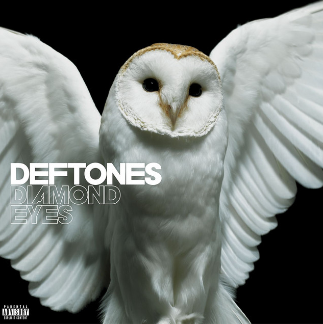
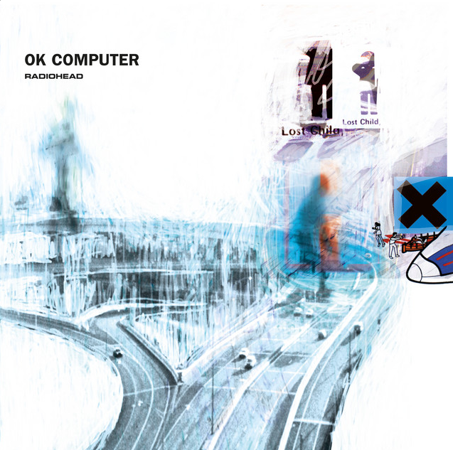
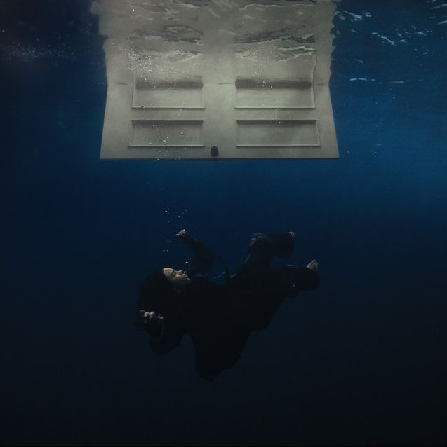
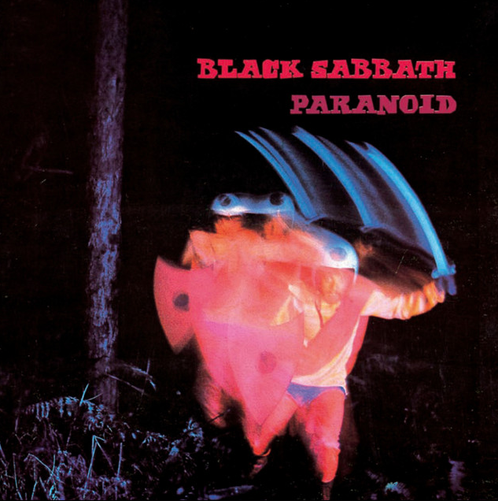

Álbuns Relevantes
Diamond Eyes
- Gênero: Metal Alternativo
- Banda/Artista: Deftones
- Lançamento: 04/05/2010
- Tempo total de duração: 41:22
- Músicas de destaque: "Sextape", "Risk" e "Diamond Eyes"
Igor
- Gênero: Hip-Hop, R&B
- Banda/Artista: Tyler the Creator
- Lançamento: 17/05/2019
- Tempo total de duração: 39:43
- Músicas de destaque: "EARFQUAKE", "NEW MAGIC WAND" e "RUNNING OUT OF TIME"
OK Computer
- Gênero: Rock Alternativo
- Banda/Artista: Radiohead
- Lançamento: 21/05/1997
- Tempo total de duração: 53:27
- Músicas de destaque: "Karma Police", "No Surprises" e "Exit Music (For A Film)"
Hit Me Hard and Soft
- Gênero: Pop
- Banda/Artista: Billie Eilish
- Lançamento: 17/05/2024
- Tempo total de duração: 43:45
- Músicas de destaque: "LUNCH", "SKINNY" e "WILDFLOWER"
Paranoid
- Gênero: Heavy Metal
- Banda/Artista: Black Sabbath
- Lançamento: 18/09/1970
- Tempo total de duração: 42:02
- Músicas de destaque: "Paranoid", "War Pigs" e "Iron Man"
Dark Side of the Moon

- Gênero: Rock progressivo
- Banda/Artista: Pink Floyd
- Lançamento: 01/05/1973
- Tempo total de duração: 42:30
- Músicas de destaque: "Money", "Breathe(In the Air)" e "Time"
Bandas/Artistas Relevantes
Deftones
- -Origem: Estados Unidos
- -Integrantes: Chino Moreno; Stephen Carpenter; Abe Cunningham; Frank Delgado
- -Criação: 1988
- -Gênero: Metal alternativo
Tyler the creator
- -Nome Completo: Tyler Gregory Okanma
- -Origem: Estados Unidos
- -Nascimento: 06/05/1991
- -Gênero: Hip-Hop,R&B
Radiohead
- -Origem: Inglaterra
- -Integrantes: Thom Yorke; Jonny Greenwood; Colin Greenwood; Ed O'Brien; Phil Selway
- -Criação: 1985
- -Gênero: Rock alternativo
Billie Eilish
- -Nome Completo: Billie Eilish Pirate Baird O'Connell
- -Origem: Estados Unidos
- -Nascimento: 18/12/2001
- -Gênero: Pop
Black Sabbath
- -Origem: Inglaterra
- -Integrantes:Tony Iommi;Geezer Butler;Ozzy Osbourne; Bill Ward
- -Criação: 1968
- -Gênero: Heavy metal
Pink Floyd
- -Origem: Inglaterra
- -Integrantes:Roger Waters; David Gilmour; Richard Wright; Nick Mason
- -Criação: 1965
- -Gênero: Rock progressivo